C'est la raison pour laquelle il occupe la première place dans mon armoire. Tout a commencé après mes études et une pause pour me former au web.
J'ai réalisé que faire du code "juste pour faire du code" ne me suffisait plus. Je voulais du sens. Je voulais mettre mes compétences au service de projets humains, alignés sur mes valeurs : humanisme, écologie, bienveillance et éducation.
J'avais le profil, mais pas l'expérience. Alors j'ai décidé de commencer par le début : le bénévolat. C'est sur Give a Day que j'ai trouvé Accolage, et c'est là que tout a commencé.
Accolage, c'est un réseau d'entraide de voisins pour lutter contre la solitude des personnes âgées. Une mission simple, mais qui demande une présence réelle.
Je ne sais pas ce qui se passe, mais mon énergie semble matcher avec eux. J'aime cette alchimie simple : je leur redonne un peu de cette "jeunesse", et en retour, ils me font sentir spéciale.
Ce que je garde de tout ça ? Le plaisir de rendre les gens heureux. De les voir sourire et rire. Ce sont des moments de paix où rien d'autre n'existe, et c'est exactement ce que j'aime : créer de la joie, sans rien attendre en retour.
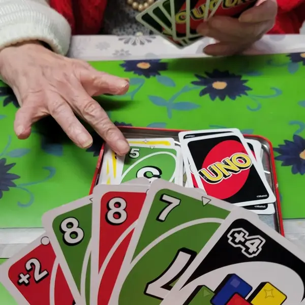
Après-midi UNO avec Colette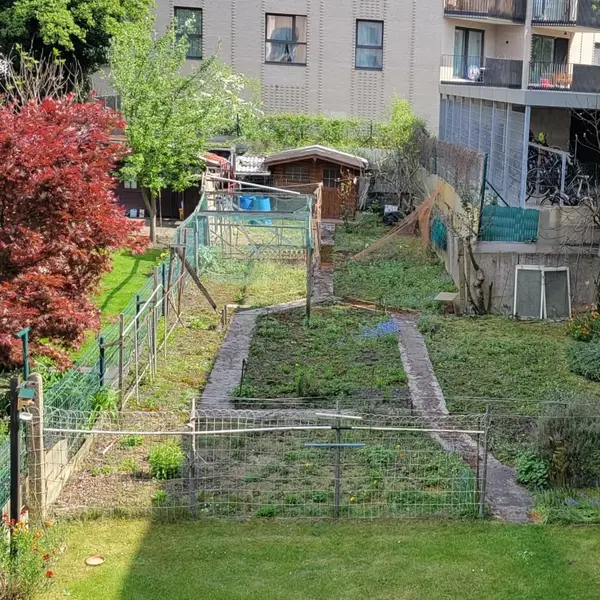
Fransisco & son potagéWaka Up, c'est une ASBL belge qui rend accessible le sport, l'art et la culture à toutes les femmes. Leur mission ? Créer des liens, renforcer la confiance en soi et l'estime de soi.
Tout a commencé avec mon ami Ibrahima, designer, qui a proposé de refaire leur site web. Il m'a demandé de l'aider, et j'ai accepté. C'était le début d'une belle collaboration technique, mais aussi d'une immersion totale dans leurs valeurs.
J'ai vite été invitée à des préparations de manifestations, et de fil en aiguille... me voilà, bénévole et participante.
Ibrahima m'a proposé de l'aider à refaire leurs site, j'ai accepté l'aventure.
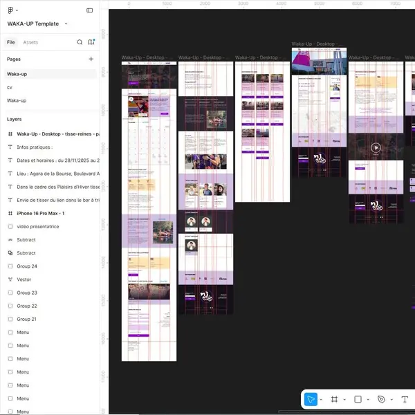
Quel beau design !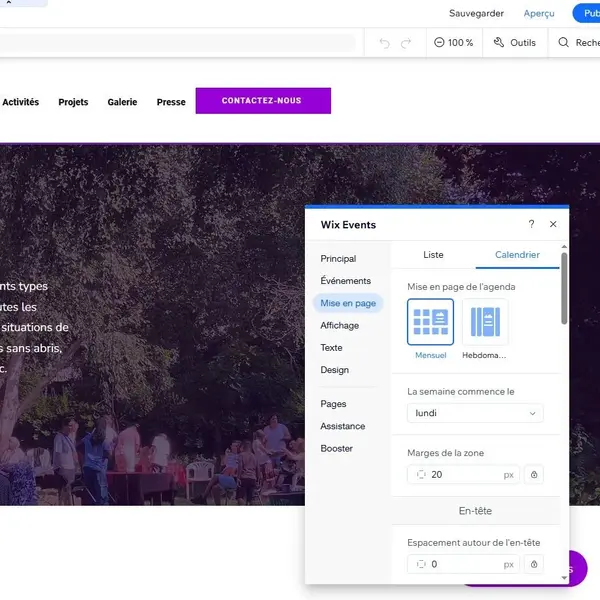
Développement tip top"Tisse-Reines" (de Waka-up) est plus qu'un atelier : c'est un projet qui fusionne art, solidarité et empowerment. En utilisant la laine, le tricot et le crochet, ils sensibilisent aux violences fondées sur le genre et créent du lien.
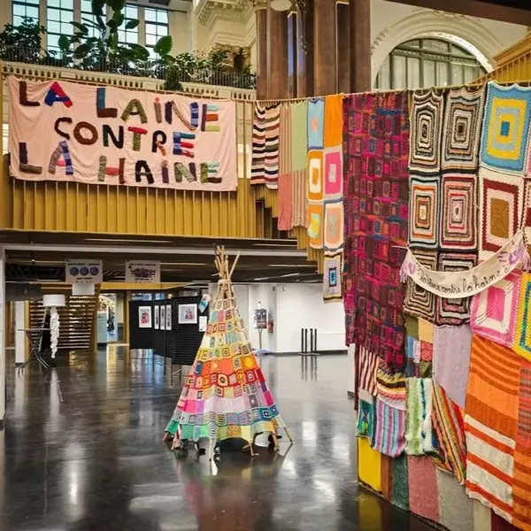
Bar à Tricot à la Bourse (Plaisir d’hivers)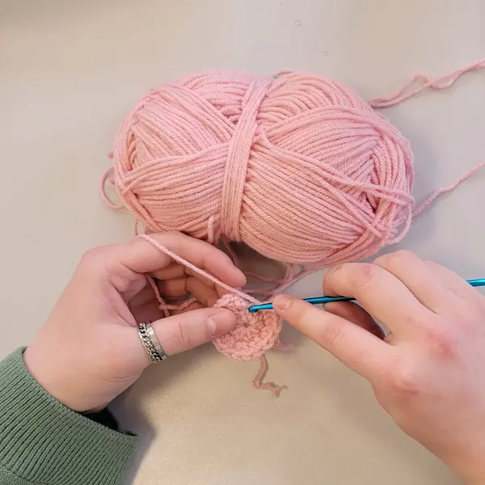
Atelier hebdomadaire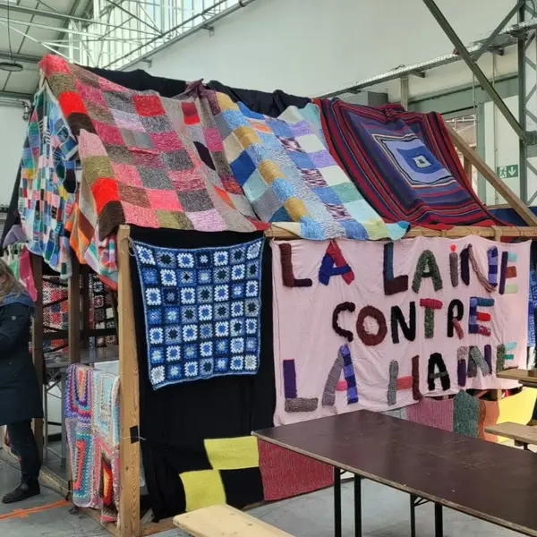
Festival du fils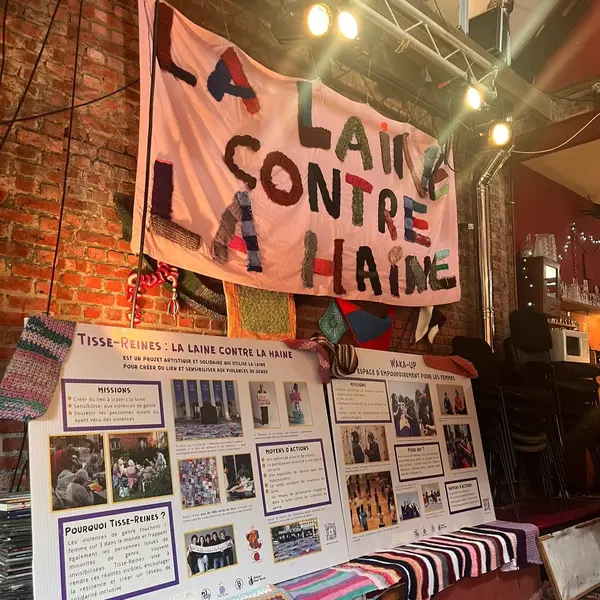
Parcours d'Artiste de Jette au PloefDevenu bénévole officiel
J’ai donné mes premiers “cours” de crochet
Animer un atelier crochet
Représentante Waka-up & Tisse-Reines
Animer toujours plus d'ateliers
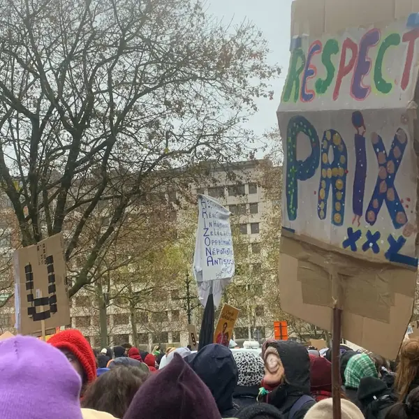
Marche du 23 novembre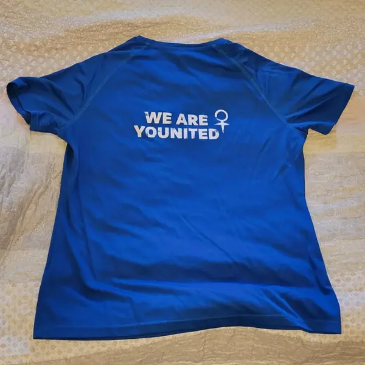
Woman younited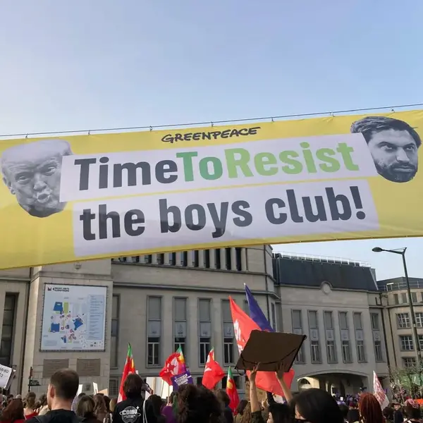
Marche du 8 Mars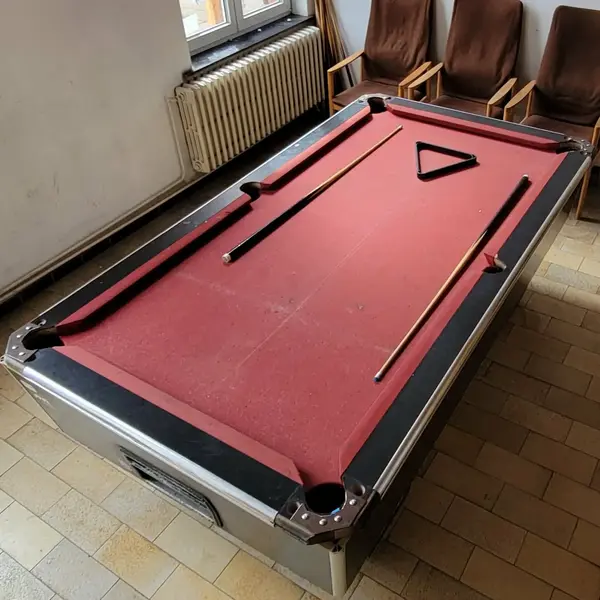
J’ai réparé le billard !Le Parc Reine Verte propose aux écoles locales d'emprunter du matériel varié pour animer des activités éducatives ou ludiques. Pour faciliter cet accès, nous développons actuellement une plateforme de catalogage. Elle permettra aux établissements de consulter facilement le stock disponible et d'organiser leurs activités en toute simplicité.
Ibrahima & moi de nouveau à l’aventure avec un nouveau projet : la Parcotek
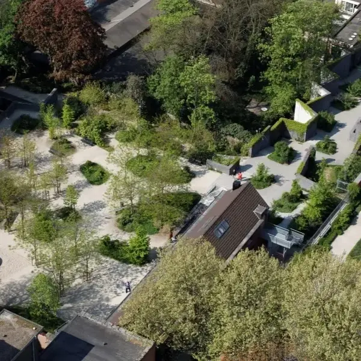
Le Parc Reine Verte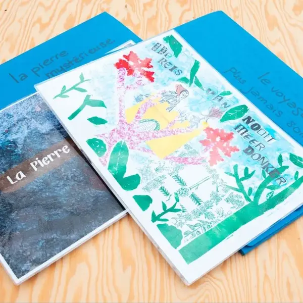
Prendre les photos de l’inventaire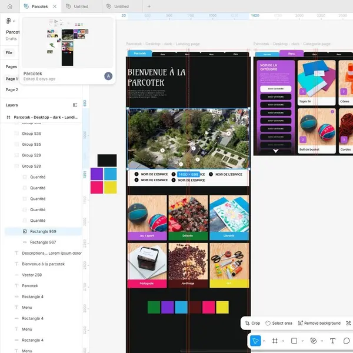
Design en cours par Ibrahima